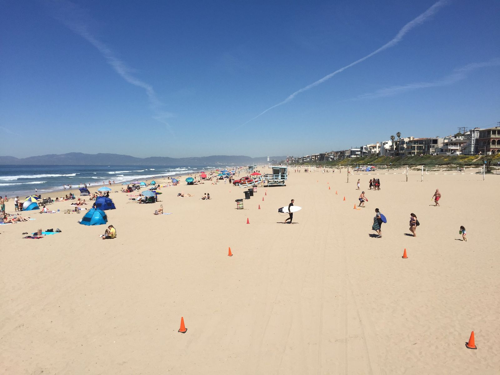
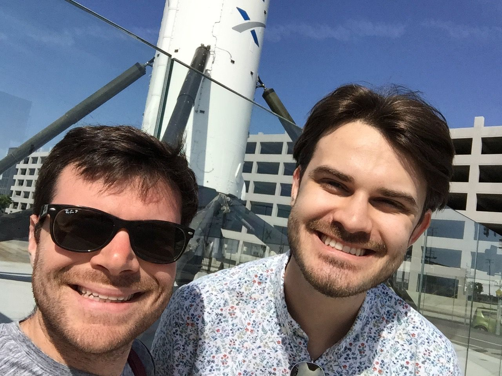
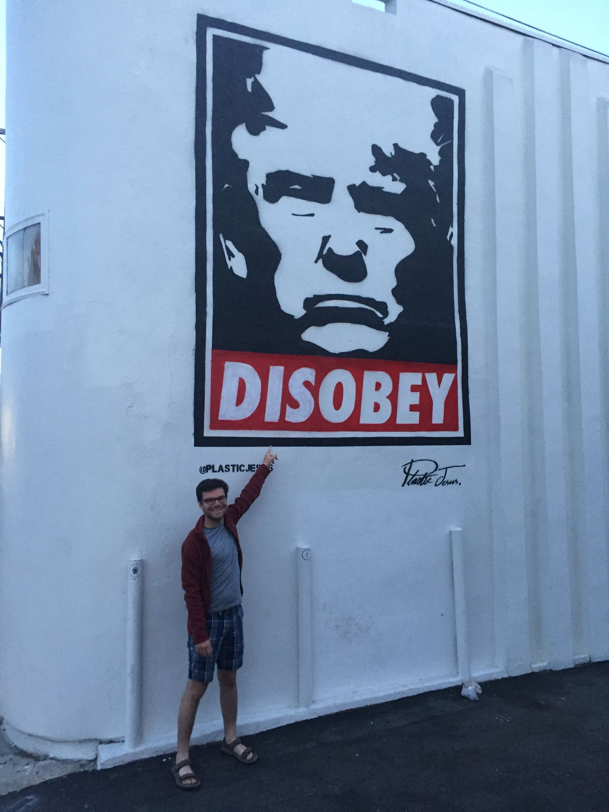
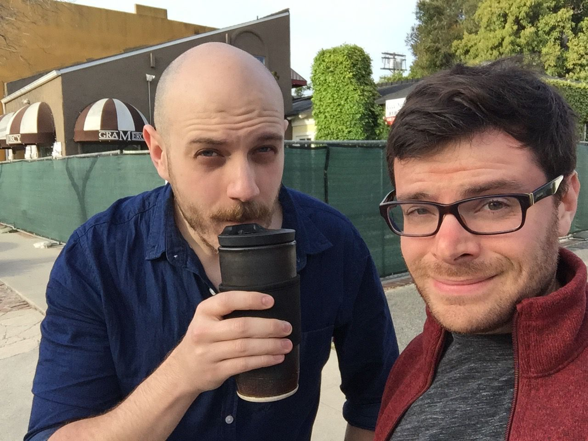
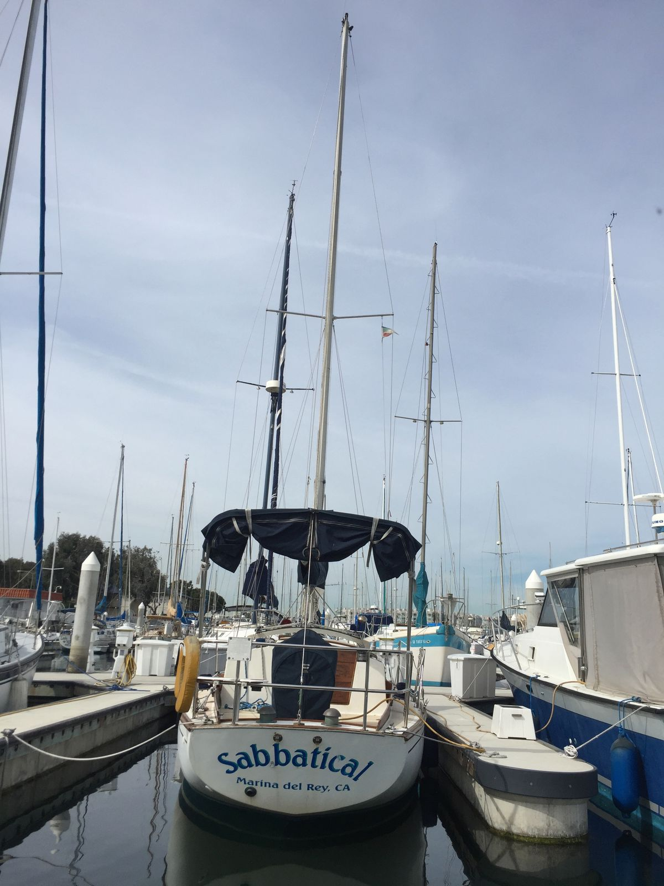
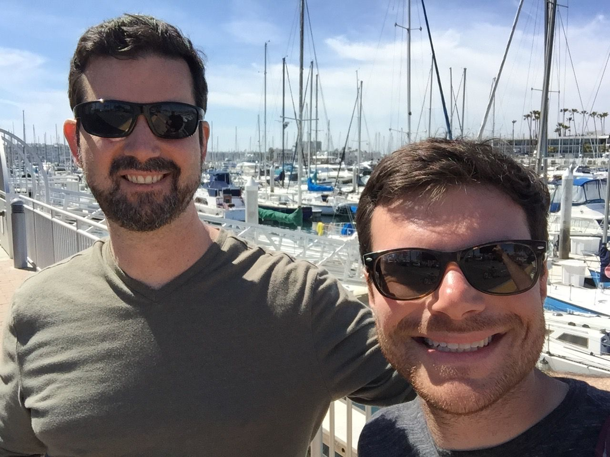

Short stay in LA
Due to limited availability for a must-do cabin in the woods with no cell service or internet, my time in LA was just two nights. As such, I spent most of that time catching up with friends and meeting new people. I woke up early in San Diego and hit the road before 8am to begin my journey north on the Pacific Coast Highway, historic 101. I drove through many beach towns, with a destination of Manhattan Beach to meet Skyler for brunch.

Being a Sunday late morning during spring break, the beach was packed and it was hard to find parking. The shortest wait for brunch was 45 minutes, so we walked along the beach while waiting. As our parking meters were nearing expiration and with no hope of finding other spots, we took off to Hawthorne to see the giant SpaceX rocket booster and get a drink at the local brewery.

From there, I drove to North Hollywood, about an hour in the worst traffic I had ever experienced. I met up with Luke and we went to Griffith observatory to see an LA sunset. There was actually no parking, so Luke dropped me off and he drove around for 20 minutes. For dinner we went to Little Pine, Moby's vegan restaurant. Moby has done a great job promoting his restaurant on Instagram, so it was oddly the highest thing on my LA to-do list besides seeing friends. The food was delicious.


The next morning, Luke and I woke up early after not much sleep, in part due to hitting up a great tiki bar (Tonga Hut) and then watching Walk Hard. After a quick breakfast, I drove about an hour, again in terrible traffic but slightly better thanks to Waze redirects, to Marina Del Rey to go sailing with Yoni. I've only been sailing once or twice before, and this experience definitely took the cake. The weather was terrific, the views were beautiful, and the company was great. During my two days in LA, I also got ice cream twice, so I am keeping up with my at-least-one-ice-cream-per-day target.
Tomorrow I take off north towards Santa Barbara, ending my day in Solvang. I plan to visit Venice Beach and perhaps kayak in Santa Barbara or hike around Malibu. We'll see what the day brings. Although I wasn't able to see many of the sights of LA or the museums highly recommended by friends, I was able to see my friends and catch up with them, which is more important to me. While I'm in the nice weather, I am going to enjoy it as much as I can, so that means hiking or beach-going for now. And with my quick breeze through LA, I still have plenty left to do for my next visit.


p.s. In case I didn't already stress it enough, the parking situation in LA is terrible. The city is huge and cars are everywhere and parking was still impossible to come by! Even quieter residential streets were packed with parked cars. Similarly, I've experienced some of the worst traffic of my life here. And I thought traffic and parking in Boston was bad....on a positive note, if that's my biggest complaint about LA, then I'm doing pretty well here :-)